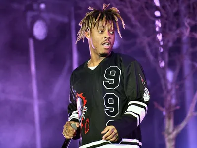

Juice WRLD, cujo nome verdadeiro é Jarad Anthony Higgins, foi um rapper, cantor e compositor norte-americano.
Ele nasceu em 2 de dezembro de 1998, em Chicago, Illinois, e faleceu trágicamente aos 21 anos, em 8 de dezembro
de 2019, em Oak Lawn, Illinois1.
Ele ganhou fama com sucessos como "Lucid Dreams" e "All Girls Are the Same"
, que ajudaram a lançar sua carreira na música. Juice WRLD lançou dois álbuns de estúdio: "Goodbye & Good
Riddance" (2018) e "Death Race for Love" (2019), ambos muito bem recebidos pela crítica e pelo público.
Infelizmente,
ele faleceu devido a uma convulsão no aeroporto de Chicago, enquanto estava em um voo. Sua morte foi uma grande
perda para a música e seus fãs.
The Juice World

^ A imagem acima é uma foto de Jarad Anthiny Higgins(Juice Wrld)
Veja algumas músicas do Juice Wrld
Juice WRLD tem uma discografia impressionante com muitas músicas populares. Algumas das suas canções mais conhecidas incluem:
"Lucid Dreams"
"All Girls Are The Same"
"High Again (Withdrawals)"
"Fighting Demons"
"Burn"
"Glo'd Up"
"Goodbye & Good Riddance"
Agora veja um vídeo de um show do Juice Wrld
A música que ele canta nesse show é "Armed and Dangerous". Essa música foi lançada em 15 de outubro de 2018